1. Pacotes
Mostra como o repositório está organizado em módulos: cliente React, scripts auxiliares, servidor Express opcional e documentação.
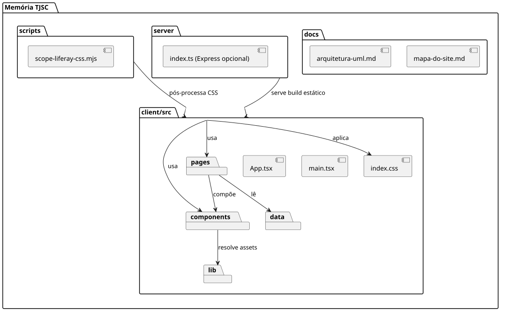
2. Casos de uso
Quem usa o sistema e o que cada perfil consegue fazer: visitante, pesquisador(a), equipe do museu, equipe do portal/Liferay e mantenedor(a) do código.
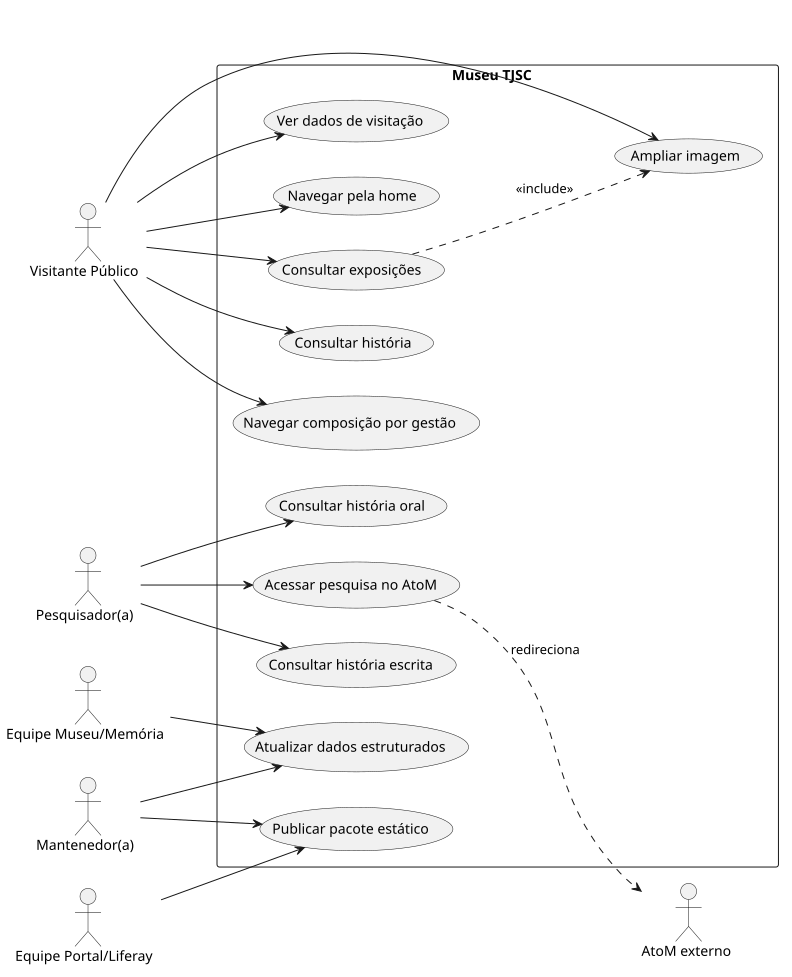
3. Componentes
Os blocos de software que sustentam a aplicação: HTML base, montagem React, roteador por hash, layout, páginas, dados e integrações externas (Liferay, AtoM, YouTube, TJSC).
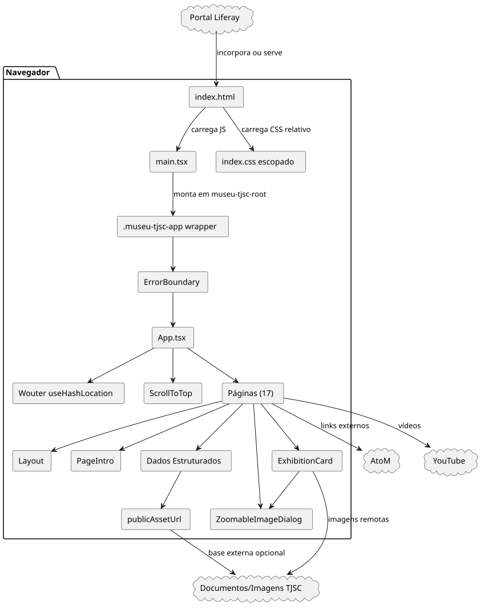
4. Classes de dados
A estrutura dos dados estruturados (exposições, publicações, gestões, entrevistas, fontes, etc.) que alimentam as páginas.
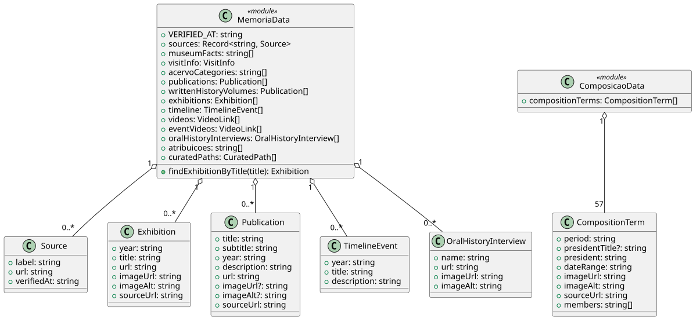
5. Sequência — Inicialização
O que acontece quando o navegador abre o site, desde o HTML inicial até a renderização da rota atual.
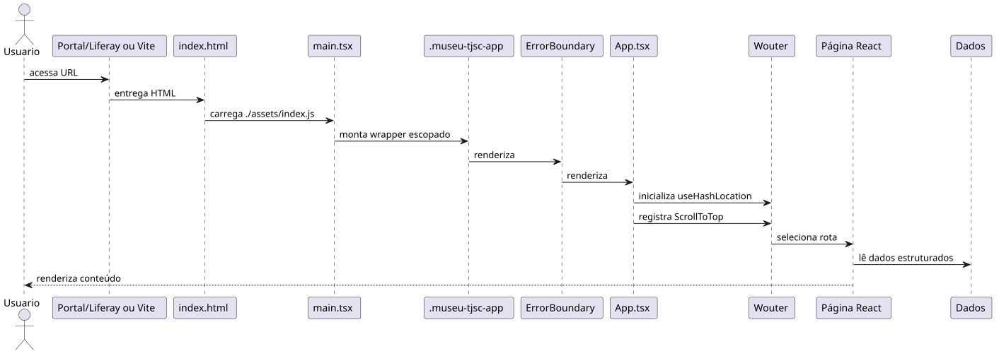
6. Sequência — Navegação por hash
Como funciona o clique em links internos sem disputar URLs com o Liferay: tudo acontece via fragmentos #/rota.
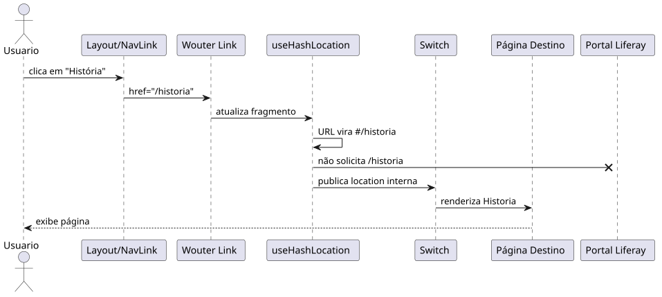
7. Sequência — Skip link
Como o atalho de acessibilidade move o foco direto para o conteúdo principal sem alterar a rota atual.
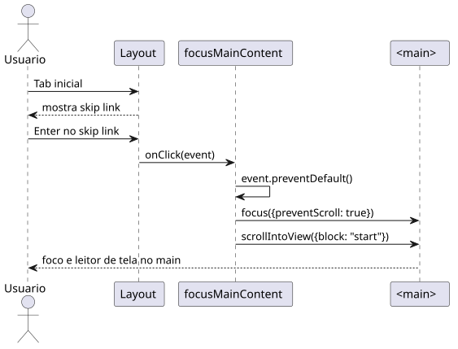
8. Sequência — Composição por gestão
Como funciona a navegação por teclado entre as 57 gestões e a atualização do painel lateral.
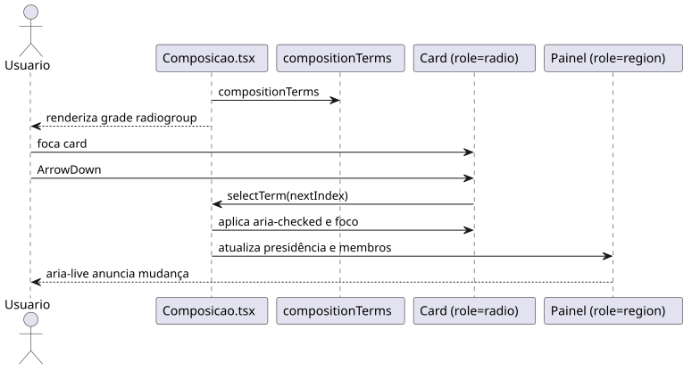
9. Sequência — Imagem ampliável
Como o modal de imagem é aberto, portaled, focado e fechado, preservando o tema escopado para o Liferay.
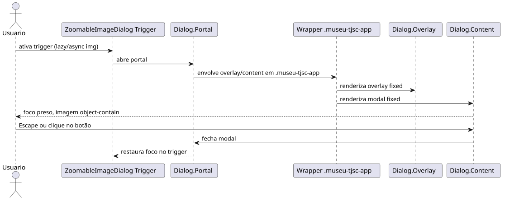
10. Implantação
Da máquina do desenvolvedor até o portal Liferay: como os arquivos saem do build e são publicados, com AtoM, YouTube e Documentos/Imagens TJSC como serviços externos.
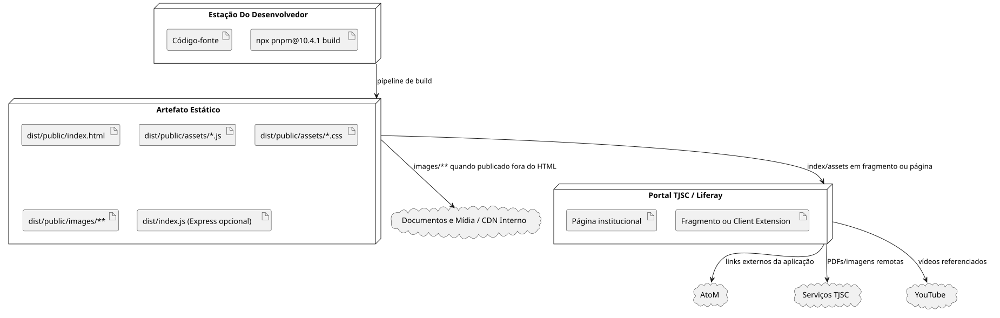
11. Atividade — Publicação Liferay
Passo a passo operacional para publicar a aplicação no portal, incluindo o caso em que as imagens ficam em base externa.
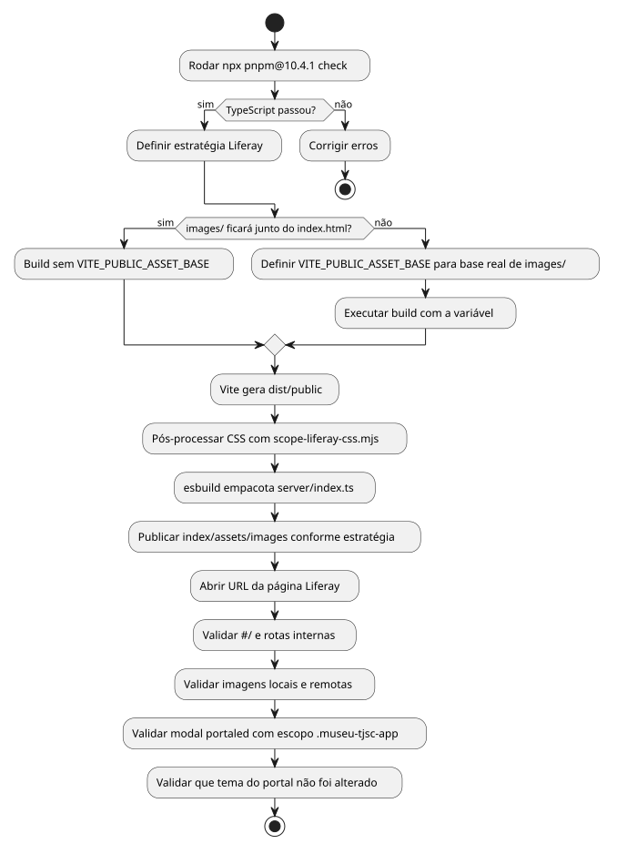
12. Estados — Diálogo de imagem
Os estados possíveis da janela de imagem ampliada (fechada, aberta) e as transições entre eles.
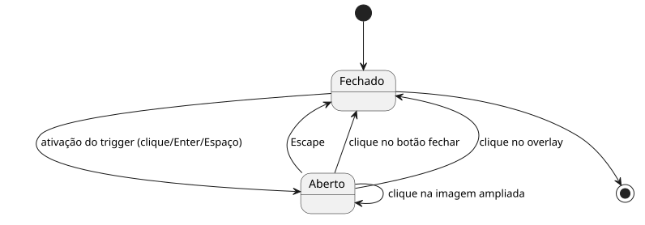
13. Estados — Grade de composição
Os estados de seleção na grade de gestões e como o teclado movimenta o foco.
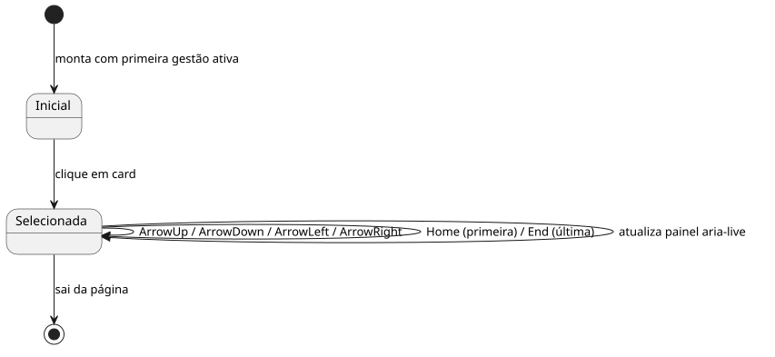